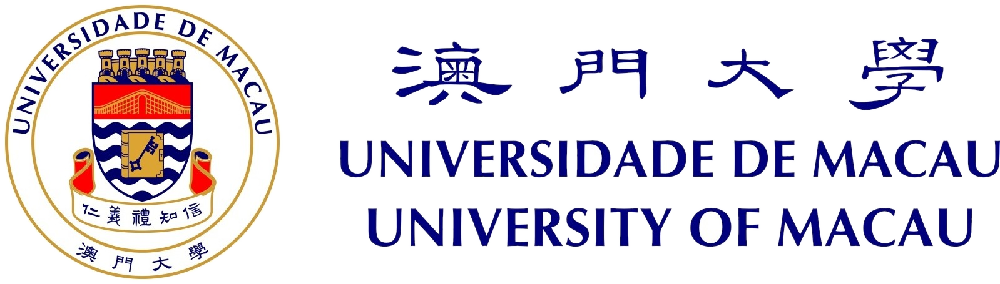
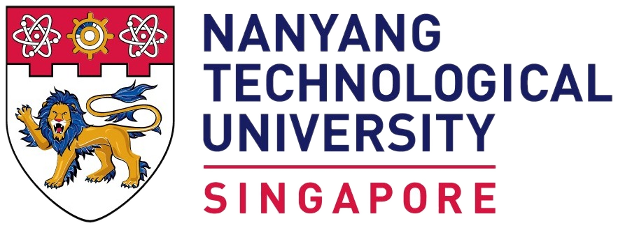

科大成員
James Simpson香港科技大學人文學部
Steve Haonan Ma香港科技大學人文學部
Yifan Wang香港科技大學圖書館
Yan Hon Michael Chung香港科技大學人文學部
Thorben Pelzer香港科技大學人文學部
其他成員
Feng Zhiwei中國中文信息學會、教育部語言文字應用研究所
Yulin Yuan澳門大學中國語言文學系
Congjun Long中國社會科學院民族學與人類學研究所
Bin Li南京師範大學語言大數據與計算人文研究中心
Gaoqi Rao北京語言大學國際中文教育研究院
Yudong Liu西華盛頓大學計算機科學系
Wang Dongbo南京農業大學信息管理學院
Alaa Mamdouh Akef北京大學外國語學院
Sun Fenglan外語教學與研究出版社
Marco Passarotti天主教聖心大學
Nianwen Xue布蘭迪斯大學計算機科學系
Di Jiang中國社會科學院民族學與人類學研究所
Haitao Liu復旦大學
Wei Huang北京語言大學
Melissa Terras愛丁堡大學藝術學院
Seth Mehl謝菲爾德大學歷史、哲學與數碼人文學院
Simon Mahony倫敦大學學院信息研究系
Joe Nockles格拉斯哥大學人文學院
Jessica Witte卑爾根大學數碼敍事研究中心
Claire Warwick杜倫大學英文系
Stuart Dunn倫敦國王學院人文藝術學院
Quinn Dombrowski史丹福大學文學、文化與語言學院
Simon Burrows西雪梨大學人文與傳播藝術學院
Claudia Corbetta意大利貝加莫大學
Francesco Mambrini天主教聖心大學
Jin Gao倫敦大學學院數碼人文中心
Masayuki Asahara日本國立國語研究所
Shahar Spencer以色列耶路撒冷希伯來大學
Stéphane Polis比利時列日大學
Toon Van Hal比利時魯汶大學
Shuangcheng Bai內蒙古師範大學計算機科學與技術學院
Xiaopeng Bai華東師範大學中國語言文學系
Renfen Hu北京師範大學國際中文教育學院
Shujian Huang南京大學計算機科學與技術系
Yunfei Long倫敦瑪麗女王大學電子工程與計算機科學學院
Shehui Liang南京師範大學國際文化教育學院
Huidan Liu中國科學院軟件研究所
Liu Liu南京農業大學信息管理學院
Pengyuan Liu北京語言大學信息科學學院
Longlong Ma中國科學院大學
Kunyu Qi西北民族大學中國民族信息技術研究院
Qi Rao華中師範大學中國語言文學學院
Si Shen南京理工大學經濟管理學院
Wei Shen華中師範大學語言與語言教育研究中心
Qi Su北京大學外國語學院
Yang Tao中國電子技術標準化研究院
Lulu Wang中國傳媒大學人文學院
Meng Wang江南大學人文學院
Xiaobing Zhao中央民族大學
合作機構




平台的協作機構 — 如有官方標誌則顯示圖片,否則以文字顯示;修改 content/partners.json 即可更新。